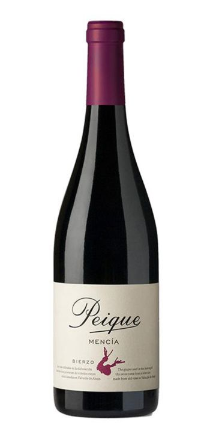

|

° É o tipo de vinho mais consumido no Brasil. |

° O vinho branco pode ser produzido a partir de uvas brancas e
tintas, com método de produção distinta ao do vinho tinto.
|

° O vinho rosado, é produzido a partir de uvas tintas por
diferentes estilos de vinificação. Um destaque para a região de
Provence, França. |

° Os vinhos licorosos mais conhecidos são os fortificados e os de
colheita tardia. O vinho fortificado é uma bebida que tem a
fermentação interrompida antes do término pela adição de
aguardente. |

° Bastante apreciado em celebrações e eventos, o espumante tem um
crescimento cada vez mais expressivo. Ele é um tipo de vinho com
gás carbônico. |